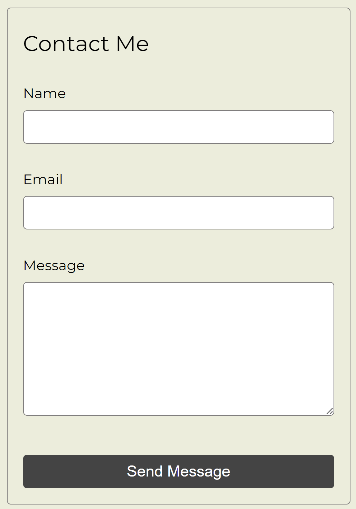

Writeup
First improvement:
The background color is animated. The colors in the background all mesh well to create a sophisticated look.
Second improvement:
The nav bar was updated to have a pop of color and aid in navigation. It also has user feedback when hovered over.
Third improvement:

The last improvement can be seen in the contact form, which